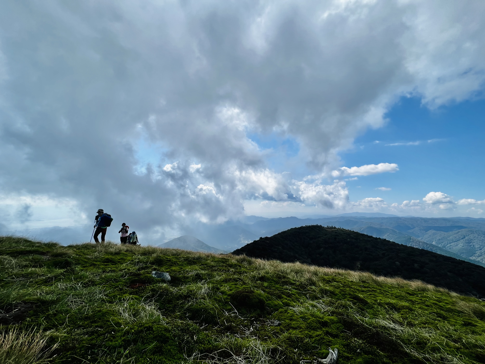

D3Q27 · CLBM · CUDA · AMR
Cumulant LBM ROV Solver
GPU-accelerated cumulant lattice Boltzmann solver with adaptive mesh refinement and interpolated bounce-back boundaries, built for simulation of turbulent channel flows with high Reynolds numbers.

Computational Dynamics · Underwater Vehicles · Numerical Simulation
There is something deeply satisfying about understanding how multible interconnected bodies behave in fluid environments. That curiosity drives my research across offshore, subsea, and aerospace systems.
Bio
I'm an assistant professor at The University of Osaka. My research lies at the intersection of multibody dynamics and computational fluid dynamics and numerical methods, with a focus on ocean engineering — ROVs, mooring systems, and offshore renewables. My work spans numerical modeling and dynamic analysis of coupled rigid-flexible multibody systems, high-performance computing and efficient numerical algorithms, and peer review for journals in ocean and mechanical engineering. I am also expanding into aerospace — bio-inspired flexible morphing wings, tethered airborne wind energy systems, and E-sails in space.
Currently based at Marine Hydro-Science and Engineering Lab.
Latest Publications
An efficient ANCF framework for large-scale simulation of offshore flexible slender structures: CPU–GPU heterogeneous computing
Genetic Algorithm optimization of lazy wave dynamic cables via multibody formalism and element-level parallelism on GPU
Understanding the Magnus effect and fluid-structure interaction of a rotating pipe in subcritical flow
On rotating drill pipe dynamics induced by stick–slip behavior
Projects
D3Q27 · CLBM · CUDA · AMR
GPU-accelerated cumulant lattice Boltzmann solver with adaptive mesh refinement and interpolated bounce-back boundaries, built for simulation of turbulent channel flows with high Reynolds numbers.
ANCF · Natural coordinates· Contact Mechanics
Coupled dynamics of ROV, its tether and a surface ship in application to offshore wind farm inspection and maintenance.
Supervising
Supervising international students at our lab on their research projects and guiding them through the fundamentals of computational fluid dynamics and multibody dynamics in English, Japanese and Burmese.
Hobbies
I go hiking frequently. I've climbed Mt. Fuji in 2018 and I've hiked quite a few trails through mountains located in the Shiga region.
Contact
Reach me at tzhtun@naoe.eng.osaka-u.ac.jp